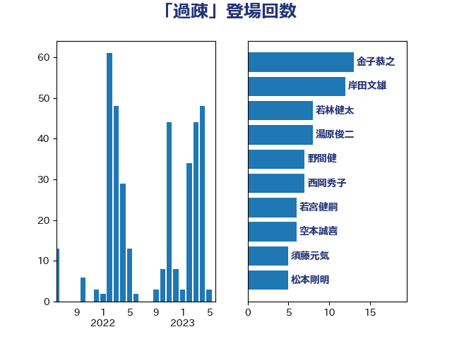

単語「過疎」

| 金子恭之 | 自由民主党 | 13 回 |
| 岸田文雄 | 自由民主党 | 12 回 |
| 若林健太 | 自由民主党 | 8 回 |
| 湯原俊二 | 立憲民主党 | 8 回 |
| 野間健 | 立憲民主党 | 7 回 |
| 西岡秀子 | 国民民主党 | 7 回 |
| 若宮健嗣 | 自由民主党 | 6 回 |
| 空本誠喜 | 日本維新の会 | 6 回 |
| 須藤元気 | 無所属 | 5 回 |
| 松本剛明 | 自由民主党 | 5 回 |
| 岡田直樹 | 自由民主党 | 5 回 |
| 仁木博文 | 無所属 | 5 回 |
| 野田聖子 | 自由民主党 | 4 回 |
| 重徳和彦 | 立憲民主党 | 4 回 |
| 赤木正幸 | 日本維新の会 | 4 回 |
| 萩生田光一 | 自由民主党 | 4 回 |
| 緑川貴士 | 立憲民主党 | 4 回 |
| 池下卓 | 日本維新の会 | 4 回 |
| 山崎正恭 | 公明党 | 4 回 |
| 寺田静 | 無所属 | 4 回 |
| 下条みつ | 立憲民主党 | 4 回 |
| 上田清司 | 国民民主党 | 4 回 |
| 一谷勇一郎 | 日本維新の会 | 4 回 |
| 高木陽介 | 公明党 | 3 回 |
| 近藤和也 | 立憲民主党 | 3 回 |
| 赤羽一嘉 | 公明党 | 3 回 |
| 西村康稔 | 自由民主党 | 3 回 |
| 芳賀道也 | 国民民主党 | 3 回 |
| 舞立昇治 | 自由民主党 | 3 回 |
| 福田昭夫 | 立憲民主党 | 3 回 |
| 神津たけし | 立憲民主党 | 3 回 |
| 田村智子 | 日本共産党 | 3 回 |
| 櫻井周 | 立憲民主党 | 3 回 |
| 木村英子 | れいわ新選組 | 3 回 |
| 新藤義孝 | 自由民主党 | 3 回 |
| 斉藤鉄夫 | 公明党 | 3 回 |
| 岡本あき子 | 立憲民主党 | 3 回 |
| 加藤勝信 | 自由民主党 | 3 回 |
| 上月良祐 | 自由民主党 | 3 回 |
| 高木かおり | 日本維新の会 | 2 回 |
| 馬場雄基 | 立憲民主党 | 2 回 |
| 階猛 | 立憲民主党 | 2 回 |
| 金城泰邦 | 公明党 | 2 回 |
| 遠藤良太 | 日本維新の会 | 2 回 |
| 谷公一 | 自由民主党 | 2 回 |
| 西村明宏 | 自由民主党 | 2 回 |
| 福島みずほ | 社会民主党 | 2 回 |
| 石川香織 | 立憲民主党 | 2 回 |
| 石井苗子 | 日本維新の会 | 2 回 |
| 池畑浩太朗 | 日本維新の会 | 2 回 |
| 梅谷守 | 立憲民主党 | 2 回 |
| 松下新平 | 自由民主党 | 2 回 |
| 杉尾秀哉 | 立憲民主党 | 2 回 |
| 早坂敦 | 日本維新の会 | 2 回 |
| 斎藤アレックス | 国民民主党 | 2 回 |
| 広瀬めぐみ | 自由民主党 | 2 回 |
| 平林晃 | 公明党 | 2 回 |
| 山本博司 | 公明党 | 2 回 |
| 山本剛正 | 日本維新の会 | 2 回 |
| 小川淳也 | 立憲民主党 | 2 回 |
| 塩田博昭 | 公明党 | 2 回 |
| 塩川鉄也 | 日本共産党 | 2 回 |
| 堀井巌 | 自由民主党 | 2 回 |
| 坂本祐之輔 | 立憲民主党 | 2 回 |
| 嘉田由紀子 | 無所属 | 2 回 |
| 吉川元 | 立憲民主党 | 2 回 |
| 加藤竜祥 | 自由民主党 | 2 回 |
| 前川清成 | 日本維新の会 | 2 回 |
| 中川康洋 | 公明党 | 2 回 |
| 三反園訓 | 無所属 | 2 回 |
| 高階恵美子 | 自由民主党 | 1 回 |
| 高橋千鶴子 | 日本共産党 | 1 回 |
| 高橋光男 | 公明党 | 1 回 |
| 青山繁晴 | 自由民主党 | 1 回 |
| 阿部司 | 日本維新の会 | 1 回 |
| 長谷川英晴 | 自由民主党 | 1 回 |
| 長浜博行 | 無所属 | 1 回 |
| 鈴木憲和 | 自由民主党 | 1 回 |
| 赤澤亮正 | 自由民主党 | 1 回 |
| 谷田川元 | 立憲民主党 | 1 回 |
| 谷合正明 | 公明党 | 1 回 |
| 菊田真紀子 | 立憲民主党 | 1 回 |
| 舩後靖彦 | れいわ新選組 | 1 回 |
| 竹谷とし子 | 公明党 | 1 回 |
| 稲田朋美 | 自由民主党 | 1 回 |
| 稲津久 | 公明党 | 1 回 |
| 福重隆浩 | 公明党 | 1 回 |
| 福島伸享 | 無所属 | 1 回 |
| 石川大我 | 立憲民主党 | 1 回 |
| 石井準一 | 自由民主党 | 1 回 |
| 石井正弘 | 自由民主党 | 1 回 |
| 矢倉克夫 | 公明党 | 1 回 |
| 盛山正仁 | 自由民主党 | 1 回 |
| 白石洋一 | 立憲民主党 | 1 回 |
| 田畑裕明 | 自由民主党 | 1 回 |
| 田村貴昭 | 日本共産党 | 1 回 |
| 甘利明 | 自由民主党 | 1 回 |
| 牧山ひろえ | 立憲民主党 | 1 回 |
| 滝波宏文 | 自由民主党 | 1 回 |
| 滝沢求 | 自由民主党 | 1 回 |
| 浮島智子 | 公明党 | 1 回 |
| 津島淳 | 自由民主党 | 1 回 |
| 水野素子 | 立憲民主党 | 1 回 |
| 武田良太 | 自由民主党 | 1 回 |
| 横山信一 | 公明党 | 1 回 |
| 梅村みずほ | 日本維新の会 | 1 回 |
| 柘植芳文 | 自由民主党 | 1 回 |
| 枝野幸男 | 立憲民主党 | 1 回 |
| 松野博一 | 自由民主党 | 1 回 |
| 松川るい | 自由民主党 | 1 回 |
| 本田太郎 | 自由民主党 | 1 回 |
| 有村治子 | 自由民主党 | 1 回 |
| 星北斗 | 自由民主党 | 1 回 |
| 後藤茂之 | 自由民主党 | 1 回 |
| 平沼正二郎 | 自由民主党 | 1 回 |
| 山谷えり子 | 自由民主党 | 1 回 |
| 山田勝彦 | 立憲民主党 | 1 回 |
| 山本順三 | 自由民主党 | 1 回 |
| 山本太郎 | れいわ新選組 | 1 回 |
| 山本佐知子 | 自由民主党 | 1 回 |
| 山崎誠 | 立憲民主党 | 1 回 |
| 小沢雅仁 | 立憲民主党 | 1 回 |
| 宮路拓馬 | 自由民主党 | 1 回 |
| 宮口治子 | 立憲民主党 | 1 回 |
| 宗清皇一 | 自由民主党 | 1 回 |
| 奥下剛光 | 日本維新の会 | 1 回 |
| 大西健介 | 立憲民主党 | 1 回 |
| 塩崎彰久 | 自由民主党 | 1 回 |
| 堤かなめ | 立憲民主党 | 1 回 |
| 和田有一朗 | 日本維新の会 | 1 回 |
| 吉良よし子 | 日本共産党 | 1 回 |
| 吉田とも代 | 日本維新の会 | 1 回 |
| 古屋範子 | 公明党 | 1 回 |
| 北神圭朗 | 無所属 | 1 回 |
| 前原誠司 | 国民民主党 | 1 回 |
| 伊藤渉 | 公明党 | 1 回 |
| 伊波洋一 | 無所属 | 1 回 |
| 伊東信久 | 日本維新の会 | 1 回 |
| 中西祐介 | 自由民主党 | 1 回 |
| 中川正春 | 立憲民主党 | 1 回 |
| 中川宏昌 | 公明党 | 1 回 |
| 上田英俊 | 自由民主党 | 1 回 |
| たがや亮 | れいわ新選組 | 1 回 |
| おおつき紅葉 | 立憲民主党 | 1 回 |